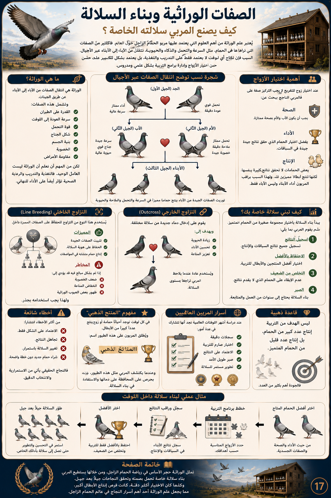

يرجع تاريخ الحمام الزاجل إلى آلاف السنين، فقد استخدمه المصريون القدماء والإغريق والرومان لنقل الرسائل لمسافات بعيدة، ثم أصبح رمزًا للوفاء والقدرة على العودة إلى موطنه.
وفي العصر الحديث تطورت تربية الحمام الزاجل لتصبح رياضة عالمية تقام لها بطولات محلية ودولية تعتمد على السرعة والدقة وقوة التحمل.